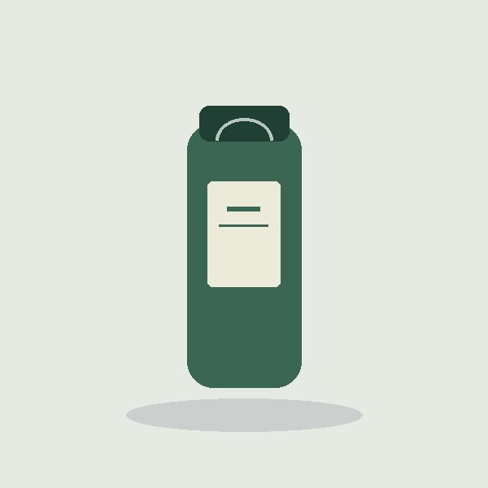

↘
一键提取
读取页面已加载的图片、懒加载地址与背景图，去重后集中展示。
FOR CHROME · 本地图片工具
把分散的商品图片放进一个画廊。
选你需要的，下载成PNG，剩下的交给图提取。
无账号 · 不上传图片 · 适用于有权使用的商品素材

01 / LESS CLICKING
获取、挑选、转换、下载。
一个小工具，把素材整理的四步连起来。
读取页面已加载的图片、懒加载地址与背景图，去重后集中展示。
图片与尺寸一目了然。全选、反选或逐张勾选，过滤小尺寸图片。
JPG、WebP等图片实际解码转换。动态图片保存为静态帧。
选中图片自动编号。显示处理进度和失败原因，方便重试。
等待需要的商品图片加载完成，点击右下角“获取图片”或工具栏插件按钮。
在新画廊查看尺寸，勾选图片；不需要的小图和加载失败项可以取消。
确认选中图片源权限后开始转换。PNG下载交给浏览器，保存结果可在下载记录查看。
03 / READY IN FOUR STEPS
这是课程制作的Chrome扩展，
以加载已解压扩展的方式安装。
下载插件ZIP，解压到一个固定文件夹。保留里面的manifest.json及其他文件。
在Chrome地址栏输入：
在扩展管理页面开启右上角的“开发者模式”。
点击“加载已解压的扩展程序”，选择解压后包含manifest.json的文件夹。
04 / BEFORE YOU START
插件只能提取页面可见或已加载的图片地址。登录限制、图片防盗链、特殊页面结构或未加载图片可能影响结果；失败项会显示原因，可回到页面重新获取。
不会。图片在浏览器中提取和转换，画廊数据保存在扩展本机存储。下载时仅向图片原始地址请求文件。
商品图片可能来自独立图片域名。开始下载时，只请求选中图片源的访问权限，用于读取原图并转换PNG。
9组核心检查与安装包校验通过。浏览器页面、扩展安装、三平台实站与正式发布仍待验证；网页示例不作为扩展运行证据。
KEEP THE PICTURES. KEEP IT SIMPLE.